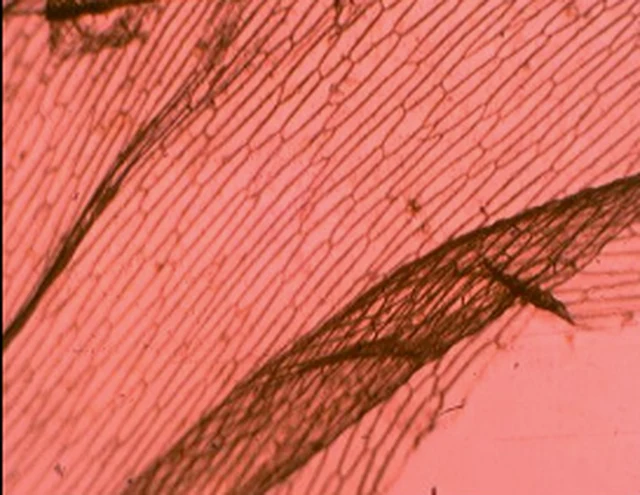

Organisasi kehidupan
Sel dan Mikroskop
Mulai dari ciri makhluk hidup, temukan sel sebagai unit kehidupan, gunakan pembesaran mikroskop, lalu jelajahi organel sel dan fungsinya.
Mode penggunaan
Progres0 dari 7 tahap
Tahap 1
Orientasi
🧠 Dari makhluk hidup menuju sel
Ingat kembali 8 ciri makhluk hidup. Ciri terakhir, tersusun dari sel, akan menjadi jembatan menuju materi sel.
Cek prasyarat
Kenali 8 ciri makhluk hidup
Pilih satu ciri, lalu kunci.
Belum diperiksa.
Identitas sesi
Identitas sesi
Digunakan saat mengirim refleksi ke guru.
Tahap 2
Engage
Guided inquiry
Dari daun menuju sel
🍃
Amati: satu daun tampak sebagai satu bagian utuh.
Amati: setelah diperbesar, bagian daun tampak tersusun dari banyak unit kecil.
Hasil pengamatan: salah satu unit penyusun jaringan tersebut adalah sel.
Prediksi sebelum membuka tahap 3
Apa dugaanmu?
Jaringan tampak tersusun dari banyak unit kecil. Unit apakah yang masih dapat menjalankan proses kehidupan?
Kunci prediksi sebelum membuka pengamatan berikutnya.
Tahap 3
Explore
Predict → Observe → Explain
Berapa pembesaran totalnya?
Okuler
10×
Tetap pada seluruh simulasi
Perbesaran objektif
Okuler10××Objektif4×=?
Prediksi pembesaran total. Okuler tetap 10×; pilih objektif 4×, 10×, atau 40× untuk membandingkan hasil pengamatan.
Belum diperiksa.
Bidang pandang preparat yang sama
Objektif 4×

Okuler 10× × objektif 4× = pembesaran total 40×.
Geser foto dengan mouse atau sentuh lalu geser untuk melihat bagian lain preparat.
Bidang pandang relatif
4×
10×
40×
PEMBESARAN TOTAL
Belum dibuka
Kunci prediksi untuk membuka hasil pengamatan.
Kesimpulan:
Pembesaran total = pembesaran lensa okuler × pembesaran lensa objektif.
Pada modul ini okuler tetap 10×. Foto pengamatan tersedia untuk objektif 4×, 10×, dan 40× sehingga pembesaran totalnya berturut-turut 40×, 100×, dan 400×. Semakin besar objektif, bidang pandang makin sempit dan detail struktur tampak lebih besar.
Tahap 4
Explain
Konsep inti
Sel adalah unit struktural dan fungsional terkecil makhluk hidup.
Struktural berarti tubuh makhluk hidup tersusun atas sel. Fungsional berarti berbagai proses kehidupan berlangsung di dalam sel.
🧍Organisme
→
🫁Sistem organ
→
🫀Organ
→
▦Jaringan
→
◉Sel
Catatan: organisme uniseluler hanya tersusun atas satu sel, sedangkan organisme multiseluler tersusun atas banyak sel yang dapat memiliki bentuk dan fungsi berbeda.
Model sel hewan
Sentuh hotspot organel untuk melihat fungsi dan akibat jika terganggu
0 / 9 dikenali
Mode kalibrasi
Seret hotspot ke titik yang tepat.
Kenali organel sel hewan
Sentuh salah satu hotspot pada gambar. Nama, fungsi utama, dan akibat jika organel terganggu akan muncul di sini.
Model sel tumbuhan
Sentuh hotspot organel untuk melihat fungsi dan akibat jika terganggu
0 / 11 dikenali
Mode kalibrasi
Seret hotspot ke titik yang tepat.
Kenali organel sel tumbuhan
Perhatikan organel yang dimiliki bersama dengan sel hewan dan organel khas yang mendukung fungsi tumbuhan.
Bandingkan model
Mana yang dimiliki sel hewan, sel tumbuhan, atau keduanya?
Pilih satu struktur. Dua kartu di bawah akan menunjukkan keberadaannya.
Pilih struktur di atas.
Pilih struktur di atas.
Tahap 5
Elaborate
Model-Based Learning
Lima kasus fungsi organel
Pilih organel, kunci, lalu pilih alasan. Setiap langkah maksimal dua percobaan.
0 / 5 selesaiAwal 0 / 10Akhir 0 / 10
Tahap 6
Evaluate
Soal 1 / 10
Skor 0
Pilih satu jawaban.
Tahap 7
Reflect
Pada bagian mana kamu masih mengalami kesulitan?
Seberapa yakin kamu memahami materi?
Kirim refleksi ke guru
Refleksi tersimpan lokal sampai dikirim.
Belum pernah dikirim.